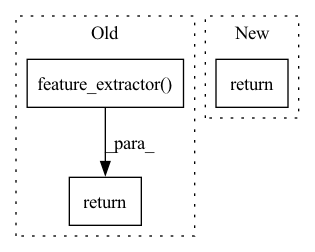

Pattern ID :26331
Before Change
// need to cast tensor to numpy for the huggingface whisper feature extractor.
numpy_wav = wav.cpu().numpy().tolist()
return self.feature_extractor(
numpy_wav, return_tensors="pt", sampling_rate=self.sampling_rate
) .input_features.to(wav.device)
def forward_decoder(self, audio_features, tokens):
Perform one step of the whisper decoder.After Change
mels = self._pad_or_trim(wav)
mels = self._log_mel_spectrogram(mels)
return mels
// Adapted from:
// https://github.com/openai/whisper/blob/eff383b27b783e280c089475852ba83f20f64998/whisper/audio.py//L92In pattern: SUPERPATTERN
Frequency: 3
Non-data size: 3
Instances Fragment ID: 79078314
Project Name: speechbrain/speechbrain
Commit Name: 84403b4c91d933d1555b67c69bf32c011cb39280
Time: 2022-11-28
Author: 34525085+lucadellalib@users.noreply.github.com
File Name: speechbrain/lobes/models/huggingface_whisper.py
M Class Name: HuggingFaceWhisper
N Class Name: HuggingFaceWhisper
M Method Name: _get_mel(2)
N Method Name: _get_mel(2)
M Parent Class: nn.Module
N Parent Class: nn.Module
M File Name: speechbrain/lobes/models/huggingface_whisper.py
N File Name: speechbrain/lobes/models/huggingface_whisper.py
M Start Line: 143
M End Line: 146
N Start Line: 149
N End Line: 151
Before Change
wav : torch.Tensor (signal)
A batch of audio signals to transform to features.
out = self.model.feature_extractor( wav)
out = self.model.feature_aggregator(out).squeeze(0)
out = out.transpose(2, 1)
return out
After Change
with torch.no_grad():
return self.extract_features(wav).detach()
return self.extract_features(wav)
def extract_features(self, wav):
Fragment ID: 79078315
Project Name: speechbrain/speechbrain
Commit Name: e532179dbe4f945aa99cb7f2270ec55d6004f3fa
Time: 2021-04-07
Author: parcollet.titouan@gmail.com
File Name: speechbrain/lobes/models/fairseq_wav2vec.py
M Class Name: FairseqWav2Vec1
N Class Name: FairseqWav2Vec1
M Method Name: forward(2)
N Method Name: forward(2)
M Parent Class: nn.Module
N Parent Class: nn.Module
M File Name: speechbrain/lobes/models/fairseq_wav2vec.py
N File Name: speechbrain/lobes/models/fairseq_wav2vec.py
M Start Line: 167
M End Line: 171
N Start Line: 174
N End Line: 178
Before Change
// need to cast tensor to numpy for the huggingface whisper feature extractor.
numpy_wav = wav.cpu().numpy().tolist()
return self.feature_extractor(
numpy_wav, return_tensors="pt", sampling_rate=self.sampling_rate,
) .input_features.to(wav.device)
def forward_decoder(self, audio_features, decoder_input_ids):
Perform one step of the whisper decoder.After Change
// need to cast tensor to numpy for the huggingface whisper feature extractor.
mels = self._pad_or_trim(wav)
mels = self._log_mel_spectrogram(mels)
return mels
def _log_mel_spectrogram(self, audio):
Compute the Mel spectrogram of a batch of input waveforms. Fragment ID: 79078313
Project Name: speechbrain/speechbrain
Commit Name: aa54e5cf3cb642c743b17fdbd63522038576323a
Time: 2022-11-30
Author: parcollet.titouan@gmail.com
File Name: speechbrain/lobes/models/huggingface_whisper.py
M Class Name: HuggingFaceWhisper
N Class Name: HuggingFaceWhisper
M Method Name: _get_mel(2)
N Method Name: _get_mel(2)
M Parent Class: nn.Module
N Parent Class: nn.Module
M File Name: speechbrain/lobes/models/huggingface_whisper.py
N File Name: speechbrain/lobes/models/huggingface_whisper.py
M Start Line: 150
M End Line: 153
N Start Line: 161
N End Line: 163